Зникаючі види птахів
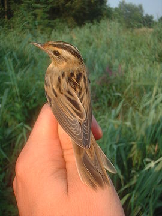 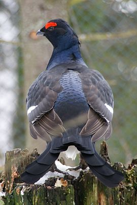 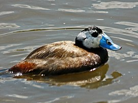 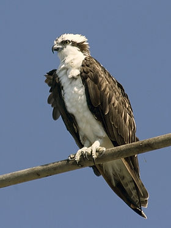 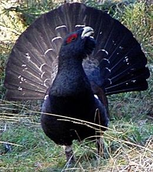
Зліва направо: Очеретянка прудка; Тетерук; Скопа; Савка; Глушець
Зникаючі кажани
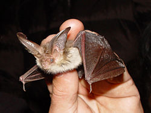 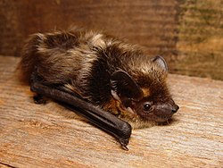 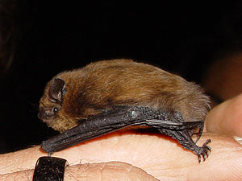 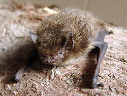 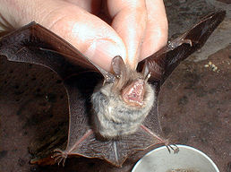
Зліва направо: Вухань звичайний;Пергач північний;Нетопир карлик;Нетопир звичайний;Нічниця війчаста
Зникаючі метелики
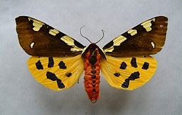 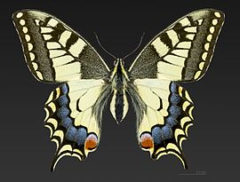  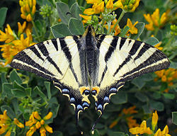 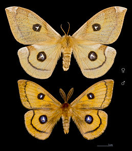
Зліва направо: Ведмедиця велика;Махаон;Мнемозина;Подалірій;Сатурнія руда
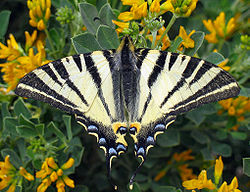 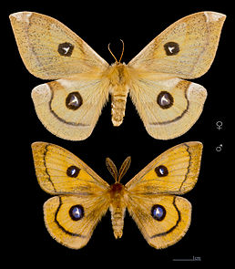
Зліва направо: Ведмедиця велика;Махаон;Мнемозина;Подалірій;Сатурнія руда
Зникаючі жуки
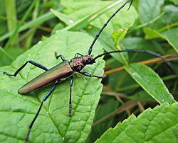 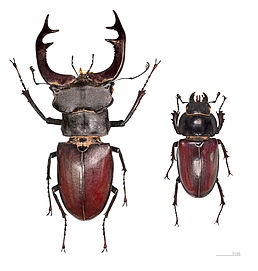 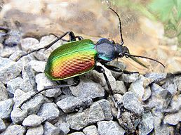 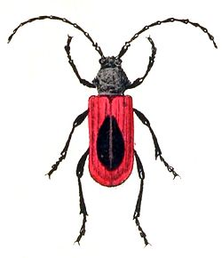
Зліва направо: Вусач пахучий мускусний;Жук-олень;Красотіл пахучий;Вусач-пурпуронадкрил Келера
Зникаючі риби
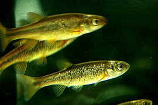  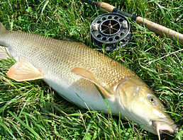
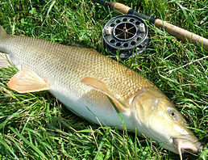  Зліва направо: Мересниця озерна;Карась звичайний;Марена дніпровська;Ялець звичайний
Зліва направо: Мересниця озерна;Карась звичайний;Марена дніпровська;Ялець звичайний
Зникаючі гризуни
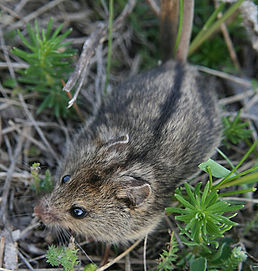 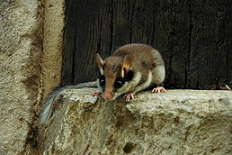 
 Зліва направо: Мишівка степова;Жолудниця європейська;Білозубка білочерева;Мишівка лісова
Зліва направо: Мишівка степова;Жолудниця європейська;Білозубка білочерева;Мишівка лісова
Зникаючі звірі
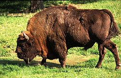 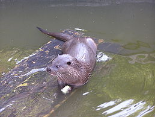 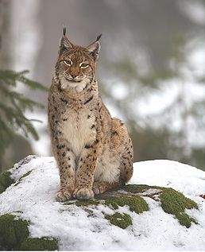 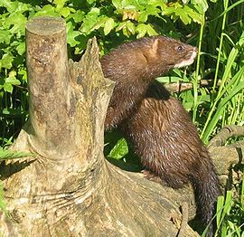
Зліва направо: Зубр;Видра річкова;Рись;Норка європейська